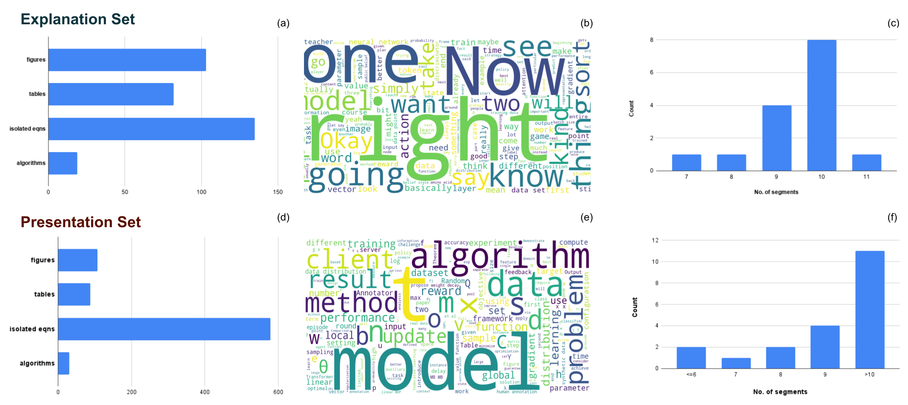
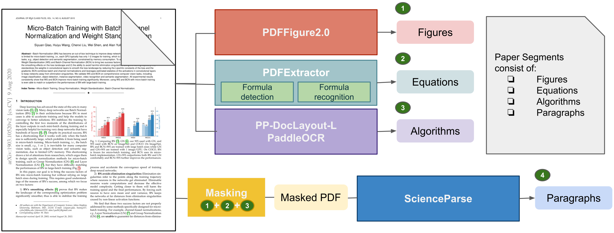
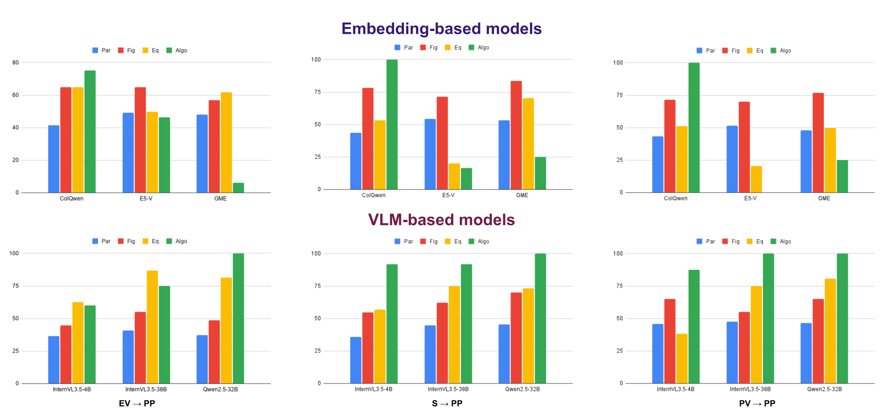
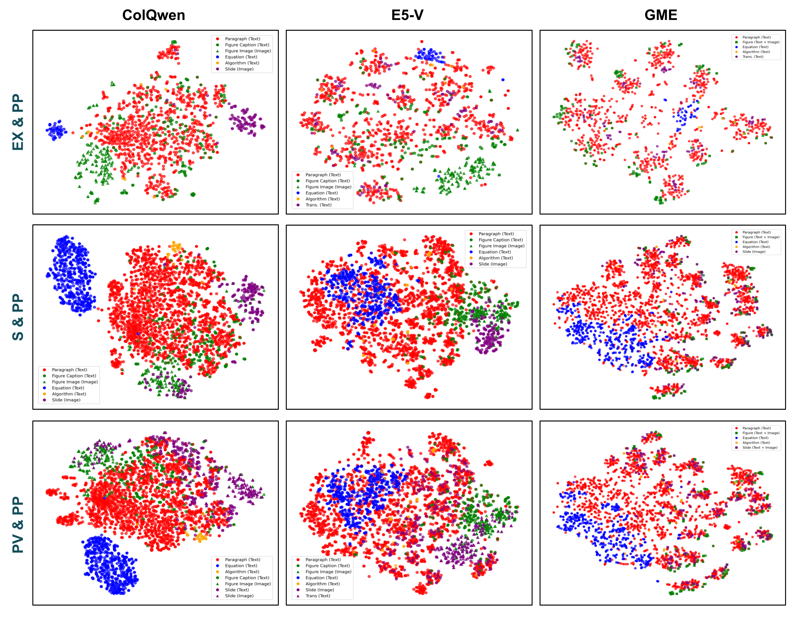

Unifying Scientific Communication: Fine-Grained Correspondence Across Scientific Media
Abstract
The communication of scientific knowledge has become increasingly multimodal, spanning text, visuals, and speech through materials such as research papers, slides, and recorded presentations. These different representations collectively convey a study’s reasoning, results, and insights, offering complementary perspectives that enrich understanding. However, despite their shared purpose, such materials are rarely connected in a structured way. The absence of explicit links across formats makes it difficult to trace how concepts, visuals, and explanations correspond, limiting unified exploration and analysis of research content. To address this gap, we introduce the Multimodal Conference Dataset (MCD), the first benchmark that integrates research papers, presentation videos, explanatory videos, and slides from the same works. We evaluate a range of embedding-based and vision–language models to assess their ability to discover fine-grained cross-format correspondences, establishing the first systematic benchmark for this task. Our results show that vision–language models are robust but struggle with fine-grained alignment, while embedding-based models capture text–visual correspondences well but equations and symbolic content form distinct clusters in the embedding space. These findings highlight both the strengths and limitations of current approaches and point to key directions for future research in multimodal scientific understanding.
Results
Retrieval results across traversals from explanatory video (EV→PP), slides (S→PP), and presentation video (PV→PP) to paper. Evaluation is performed over paragraphs (Par), figures (Fig), and equations (Eq) using NDCG@K. For algorithms (Algo), recall is reported with a threshold greater than 0.6. All values are in percentage (%).
| Model | Size | Par | Fig | Eq | Algo | ||||
|---|---|---|---|---|---|---|---|---|---|
| K=1 | K=2 | K=3 | K=1 | K=2 | K=1 | K=2 | |||
| Traversal: EV → PP | |||||||||
| ColQwen2-VL | 2.21B | 47.27 | 41.52 | 40.16 | 61.40 | 64.90 | 63.16 | 64.98 | 75 |
| E5-V | 8.4B | 50.00 | 49.09 | 47.53 | 62.96 | 64.95 | 38.46 | 49.79 | 46.43 |
| GME-Qwen2VL-2B (w/o instr.) | 2.2B | 53.64 | 48.10 | 46.28 | 54.39 | 56.96 | 57.89 | 61.75 | 6.25 |
| GME-Qwen2VL-2B (with instr.) | 2.2B | 53.64 | 50.21 | 49.70 | 50.88 | 55.23 | 52.63 | 61.84 | 6.25 |
| GME-Qwen2VL-7B (w/o instr.) | 8.2B | 47.27 | 44.90 | 45.18 | 38.60 | 45.67 | 47.37 | 47.90 | 62.50 |
| GME-Qwen2VL-7B (with instr.) | 8.2B | 50.91 | 48.19 | 46.47 | 47.37 | 51.30 | 47.37 | 53.26 | 62.50 |
| InternVL3.5-4B | 4B | 36.29 | 36.45 | 34.79 | 39.34 | 44.68 | 61.90 | 62.39 | 60 |
| InternVL3.5-38B | 38B | 39.09 | 40.72 | 40.71 | 47.37 | 55.12 | 84.21 | 86.78 | 75 |
| Qwen2.5-VL-32B | 32B | 34.55 | 37.19 | 38.98 | 43.86 | 48.72 | 73.68 | 81.61 | 100 |
| Gemini-2.5 Flash | - | 53.64 | 53.60 | 53.72 | 52.63 | 56.38 | 73.68 | 82.36 | 75 |
| Gemini-2.5 Pro | - | 62.73 | 60.84 | 60.28 | 71.93 | 77.89 | 94.74 | 88.63 | 75 |
| Traversal: S → PP | |||||||||
| ColQwen2-VL | 2.21B | 48.48 | 43.68 | 45.23 | 68.18 | 78.22 | 50.98 | 53.45 | 100 |
| E5-V | 8.4B | 58.06 | 54.18 | 55.76 | 63.16 | 71.46 | 18.00 | 20.04 | 16.67 |
| GME-Qwen2VL-2B (w/o instr.) | 2.2B | 58.18 | 53.44 | 54.38 | 75.00 | 83.60 | 68.63 | 70.54 | 25 |
| GME-Qwen2VL-2B (with instr.) | 2.2B | 58.18 | 53.85 | 54.72 | 72.73 | 81.33 | 68.63 | 69.78 | 39.58 |
| GME-Qwen2VL-7B (w/o instr.) | 8.2B | 52.12 | 49.76 | 51.40 | 77.27 | 83.01 | 66.67 | 66.39 | 0 |
| GME-Qwen2VL-7B (with instr.) | 8.2B | 55.15 | 52.11 | 54.01 | 77.27 | 85.88 | 68.63 | 67.59 | 0 |
| InternVL3.5-4B | 4B | 33.33 | 35.92 | 37.71 | 40.91 | 54.69 | 50.98 | 56.97 | 91.67 |
| InternVL3.5-38B | 38B | 42.42 | 44.58 | 47.55 | 50.00 | 62.03 | 70.59 | 75.06 | 91.67 |
| Qwen2.5-VL-32B | 32B | 46.06 | 45.60 | 50.60 | 59.09 | 70.01 | 64.71 | 73.17 | 100 |
| Gemini-2.5 Flash | - | 59.39 | 57.91 | 60.68 | 77.27 | 86.43 | 80.39 | 87.81 | 100 |
| Gemini-2.5 Pro | - | 66.06 | 62.85 | 64.87 | 79.55 | 85.84 | 90.20 | 88.40 | 100 |
| Traversal: PV → PP | |||||||||
| ColQwen2-VL | 2.21B | 47.03 | 43.43 | 43.74 | 58.70 | 71.35 | 49.02 | 51.02 | 100 |
| E5-V | 8.4B | 54.05 | 51.42 | 54.07 | 60.87 | 69.94 | 17.65 | 20.40 | 0 |
| GME-Qwen2VL-2B (w/o instr.) | 2.2B | 52.97 | 47.85 | 48.54 | 65.22 | 76.72 | 49.02 | 49.70 | 50 |
| GME-Qwen2VL-2B (with instr.) | 2.2B | 55.14 | 48.82 | 49.02 | 67.39 | 77.52 | 45.10 | 50.05 | 41.67 |
| GME-Qwen2VL-7B (w/o instr.) | 8.2B | 55.14 | 49.39 | 49.76 | 69.57 | 79.70 | 60.78 | 61.26 | 37.50 |
| GME-Qwen2VL-7B (with instr.) | 8.2B | 54.59 | 48.64 | 49.88 | 65.22 | 78.40 | 62.75 | 62.47 | 56.25 |
| InternVL3.5-4B | 4B | 46.56 | 45.88 | 47.32 | 59.18 | 65.12 | 37.25 | 38.21 | 87.50 |
| InternVL3.5-38B | 38B | 49.73 | 47.70 | 48.98 | 47.83 | 55.21 | 75.00 | 75.00 | 100 |
| Qwen2.5-VL-32B | 32B | 44.86 | 46.39 | 49.41 | 52.17 | 65.05 | 74.51 | 80.70 | 100 |
| Gemini-2.5 Pro | - | 59.46 | 58.66 | 61.20 | 78.26 | 81.53 | 86.27 | 89.99 | 100 |
| Gemini-2.5 Flash | - | 59.46 | 56.22 | 57.22 | 76.09 | 81.57 | 82.35 | 86.06 | 100 |

Statistics of the Explanation and Presentation sets:} (a) and (d) show the distribution of algorithms, equations, tables, and figures in the papers; (b) presents the word cloud generated from ASR transcripts; (e) presents the word cloud generated from slide text and ASR transcripts; (c) and (f) depict the number of videos per segment category.

Pipeline for extracting paper segments—figures, equations, algorithms, and paragraphs—from the paper PDF.

Illustrates the performance of embedding-based and VLM-based models across all three traversal settings (EV $\to$ PP, S $\to$ PP, PV $\to$ PP). NDCG@2 scores are used for paragraphs, figures, and equations. For algorithms, recall is calculated using a threshold of 0.6.

Visualization of query and candidate embeddings for representative instances across all three settings: EX $\to$ PP, S $\to$ PP, and PV $\to$ PP. Zoom in for a better view.
BibTeX
@inproceedings{mcd_2026,
title={Unifying Scientific Communication: Fine-Grained Correspondence Across Scientific Media},
author={Megha Mariam K M and Vineeth N. Balasubramanian and C. V. Jawahar},
booktitle={Findings of the IEEE/CVF Conference on Computer Vision and Pattern Recognition (CVPR)},
year={2026}
}